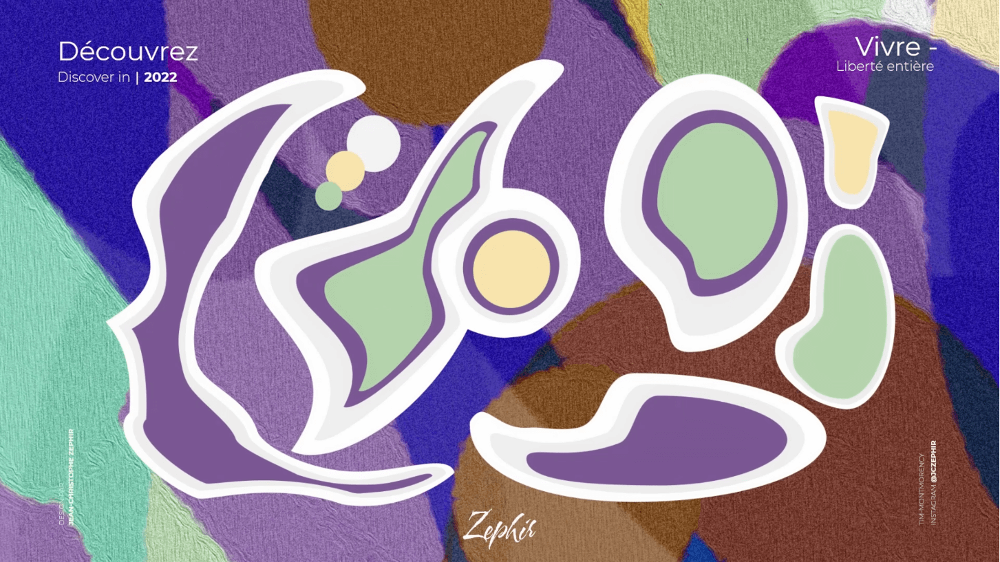
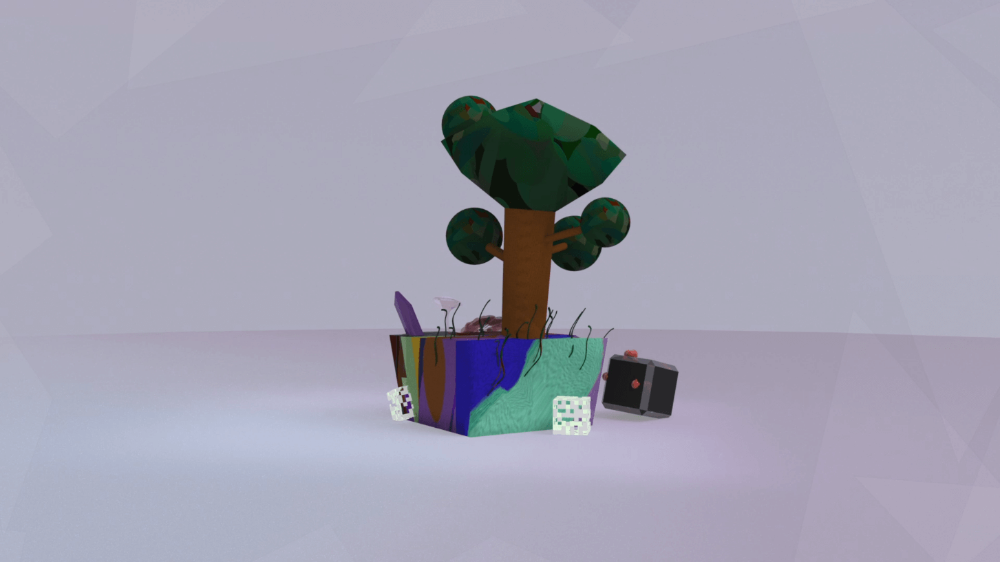
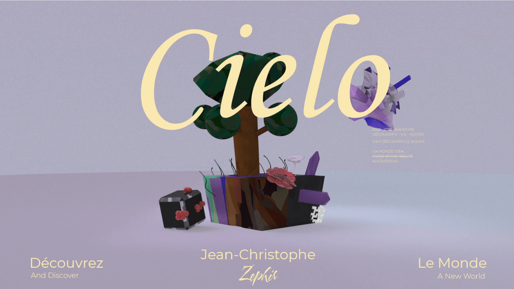
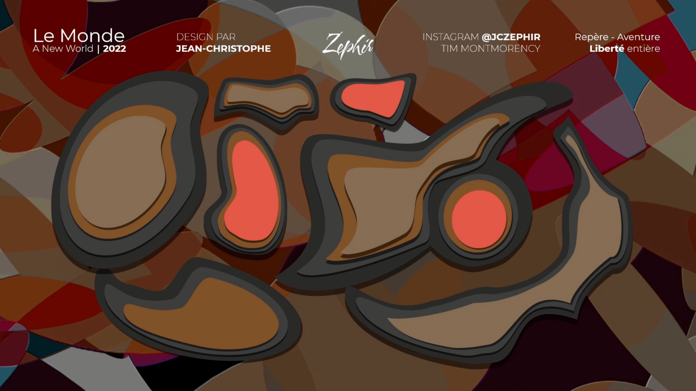
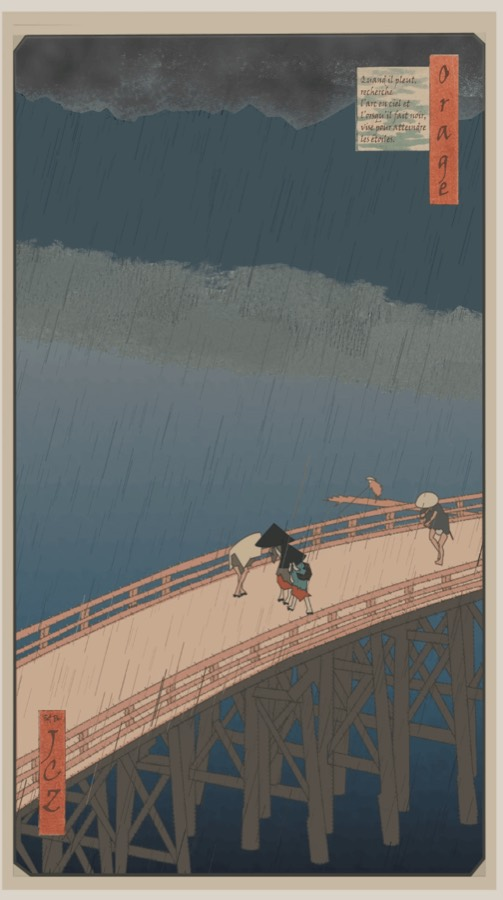

Cliquer pour regarder
Animation 2D/3D
(12/21)
Le but du court-métrage "Cielo" était de vendre un monde extraordinaire, féérique comme s-il était un produit. Ce monde devait avoir l'air attrayant pour le spectateur. L'entièreté de la scène 3D à été modélisé et animé dans Maya. Les animations 2D ont été animé dans Adobe After Effects. La composition musicale à été faite dans FL Studio et le montage final à été fait dans Davinci
Images4 photos




